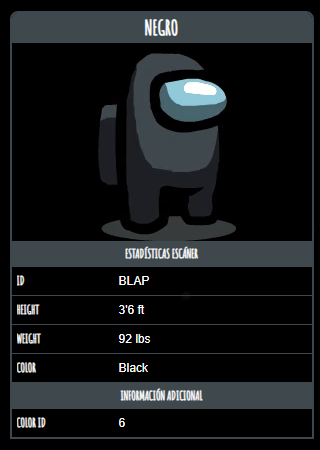

Negro

Negro es uno de los colores principales en Among
us que el jugador puede
personalizar.
Curiosidades
- Negro es el personaje utilizado para el icono de sabotaje.
- Negro es el color utilizado en la tarjeta de identificación para la tarea Deslizar Tarjeta.
- Se usa en las instrucciones.
- Negro originalmente se llamaba "Gris".
- En múltiples animaciones hechas por fans, es probable que sea el Impostor,
junto con
Rojo.
- Negro se usa normalmente como el Impostor en la publicidad, las imágenes,
en la página de
Steam de Among us, y en "Cómo jugar", el Negro se usa como el Impostor en la barra de
información del impostor.